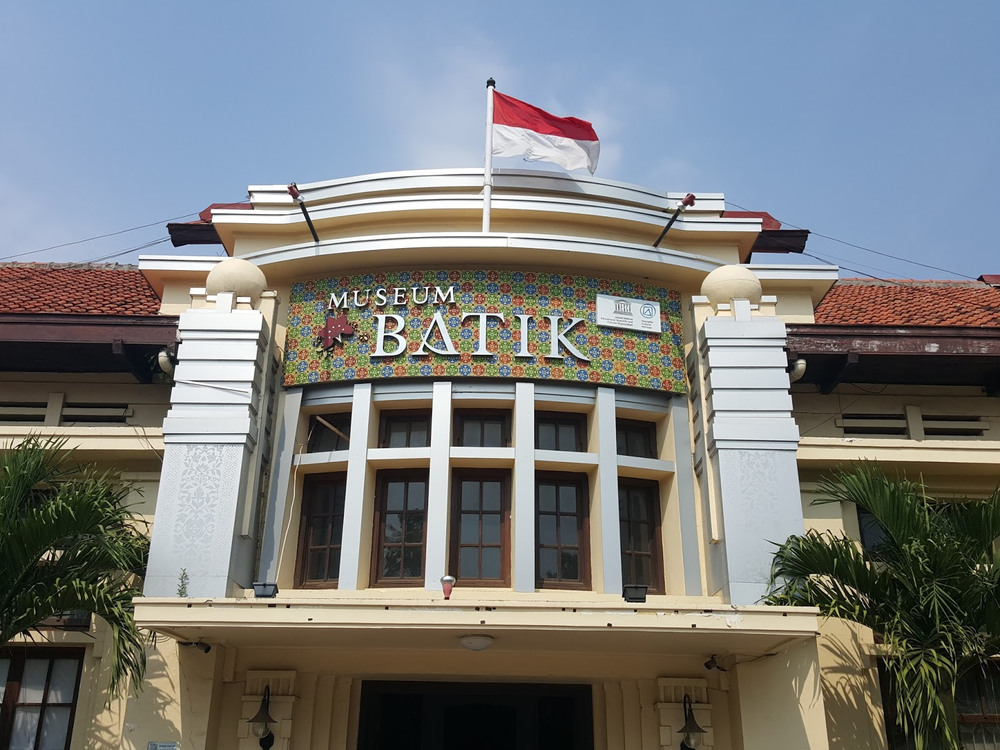

Sejarah
Kota Pekalongan memiliki sejarah yang kaya, menjadi pusat perdagangan rempah-rempah dan batik sejak zaman kolonial Belanda.
Kota yang terletak di Provinsi Jawa Tengah dengan sebutan "Kota Batik" karena merupakan pusat produksi batik terkenal di Indonesia.
Kota Pekalongan memiliki sejarah yang kaya, menjadi pusat perdagangan rempah-rempah dan batik sejak zaman kolonial Belanda.
Pekalongan terletak di pantai utara Jawa dengan sebagian wilayahnya berbatasan langsung dengan Laut Jawa.
Kota ini memiliki beragam tempat wisata, mulai dari pantai-pantai yang indah hingga museum batik yang menarik untuk dikunjungi.